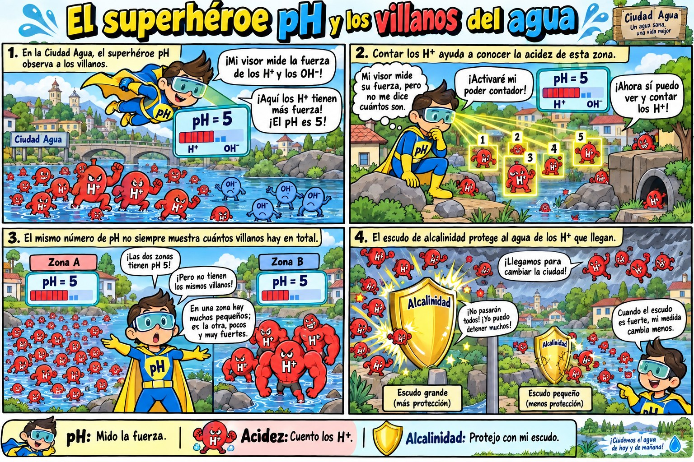
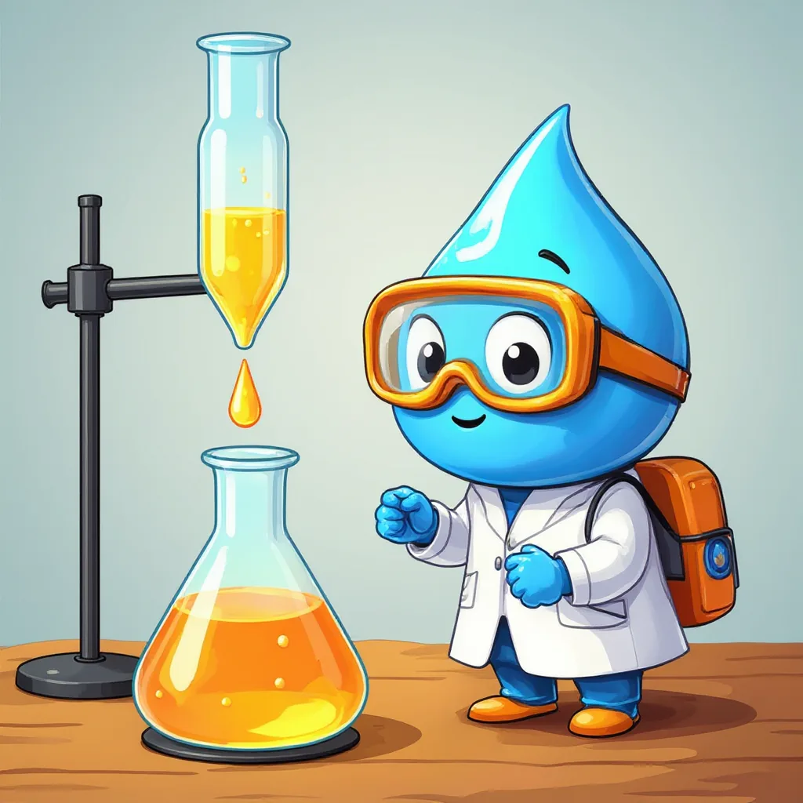

Parámetro 4 de 6
Alcalinidad y acidez
El escudo del agua y los villanos que lo ponen a prueba.
Una historia para empezar

🛡️ Alcalinidad
Para empezar, la alcalinidad es la capacidad del agua para neutralizar ácidos, es decir, para quitarles su fuerza. Por ejemplo, funciona como un escudo: cuando llega una lluvia ácida o una descarga ácida, el agua la resiste y su pH cambia poco. Esta defensa proviene sobre todo de sales disueltas llamadas bicarbonatos y carbonatos. Sin embargo, el escudo tiene un límite y puede agotarse si llega demasiado ácido.
⚔️ Acidez
Por otro lado, la acidez es la capacidad del agua para neutralizar bases, que son las sustancias contrarias a los ácidos, como el jabón. Además, una acidez alta suele deberse a mucho dióxido de carbono disuelto, a aguas que salen de minas o a residuos de fábricas. Por eso, un agua muy ácida puede corroer, es decir, desgastar las tuberías, y además dañar a los peces.
No exactamente. En realidad, el pH muestra qué tan fuerte es la acidez en ese momento, mientras que la acidez cuenta cuánta sustancia ácida hay en total. Así, en el cómic, el pH mide la fuerza de los villanos y la acidez los cuenta a todos.
¿Cómo se mide?
Por ejemplo, las dos se miden por titulación: se agrega gota a gota un líquido de concentración conocida hasta que un indicador cambia de color. Para la alcalinidad se agrega un ácido y el indicador pasa de amarillo a naranja salmón; para la acidez se agrega una base y la muestra se vuelve rosada tenue. Finalmente, con el volumen gastado se calcula el resultado en miligramos de carbonato de calcio por litro (mg CaCO₃/L).

Laboratorio virtual: alcalinidad
La bureta y el erlenmeyer muestran los reactivos que se usan en cada paso.
Calculadoras de alcalinidad y acidez
Laboratorio virtual: acidez
Mini-reto
Todas las respuestas se encuentran en esta página.
Llega la misma descarga ácida a dos ríos con pH 7,0. El río A tiene alcalinidad de 20 mg CaCO₃/L y el B, de 180. ¿Cuál cambia menos su pH?
En una titulación de alcalinidad se gastaron 5,0 mL de HCl 0,02 N con 50 mL de muestra. ¿Cuál es el resultado?
¿Qué indicador marca el final de la titulación de acidez?